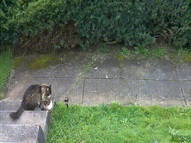
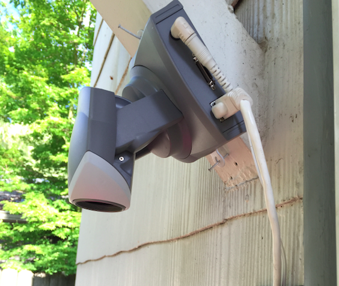
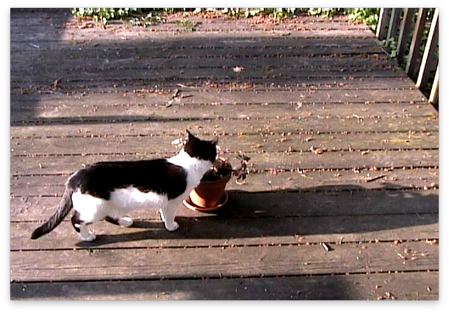
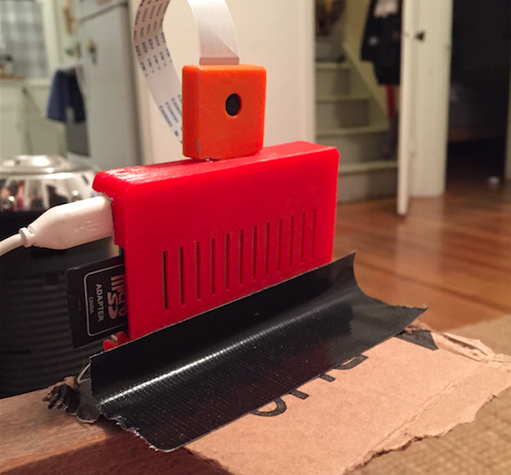
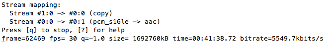

HD Live Streaming Cats to YouTube with the Raspberry Pi Camera
How to stream in 1080p to YouTube Live Events, May 2015
Over the past few months I've built three versions of a camera to detect cats in my backyard, where I have placed a potted catnip plant. I don't have my own cat (allergies/landlord) so this is how I get my fix. Plus I recently got gigabit fiber at home and have this burning desire to use the bandwidth. The final version supports full HD live streaming (skip to bottom for that), but it took a few iterations to get there.
Version one
The first version was using some motion detection software called motion-mmal. It worked but the framerate was less than 1FPS, which isn't very good at all compared to the camera modules max resolution of 1920x1080 at 30FPS. I captured 3 cats helping themselves to my catnip, but the quality left me wanting more. I also found out there is a family of 3 opossum living in the large bush in my yard, and that there is a very, very fat raccoon that frequently visits.
{kind=link}

Here's an example of the framerate it captured (in lower resolution gif form). In this gif the offending cat (which I have never seen other than in this video) reaches such an emotional peak during its time with my catnip that it throws the nip off the first step, breaking the pot. If this act was intentional or not we will never know for sure. The catnip survived.

I believe the reason for the slowness of motion-mmal is that it isn't designed to run on such a low CPU power device as the Raspberry Pi. Maybe this issue will be fixed in the future, but as you can see from the framerate of the above gif, it has a long way to go.
Version two
The next version happened thanks to a donation from my friend @beaugunderson, who donated a IP Network Cam to me for the cat surveillance cause. The camera, made by Axis Network, has an ethernet port and a web interface that had a video feed. I set up a wireless -> ethernet bridge using a WR702N and hooked the camera up in my back yard pointing down at my catnip plant.

It also boasted motion detection built in to the camera. Upon setting it up I found that it required Internet Explorer to configure the motion detection (thanks to an ActiveX-only UI), so I installed VirtualBox and configured it. It wasn't as easy to calibrate as motion-mmal, and I ended up getting a lot of shots of shadows on my porch.
Then came the problem of capturing video from it. It had a .mjpeg (Motion JPEG) live stream endpoint, but no storage and no way to record. I did discover a setting in the ActiveX UI that let me give it a HTTP endpoint to POST to when the motion detection was triggered. So I rigged it up to tell the server in my living room via HTTP POST when the motion detection triggered, and then that server would kick off a ffmpeg job that would archive the .mjpeg stream for 30 seconds.
This approach worked, but the quality wasn't acceptable:

Worse yet, the framerate was under 10FPS. Not gonna cut it in the age of HD! Another downside of the Axis Cam is that it required an AC outlet, whereas the Raspberry Pi has the nice quality of only needing USB power.
Version three (current version)
The main thing I learned in the first two versions is that I wanna try and avoid re-encoding video. It's slow (and especially too slow for CPU weak Raspi) and degrades quality.
For the latest iteration I went back to using the Raspberry Pi Camera Module. It's $25 bucks, so along with the $25 Raspberry Pi that brings the project cost to a nice even $50.

Raspberry Pi + Camera in 3D printed cases and a highly engineered stabilization mechanism
The raw data that comes from raspivid, a CLI tool that is part of the Raspberry Pi userland repository, is straight H264 encoded video data that comes from the on-board H264 encoder hardware chip built into the Raspi. This means it's fast and high quality. Re-encoding it in software is slow and crappy looking. Side note: it makes me deeply, deeply sad that our devices now come with chips that encode video data into a patented, closed video format.
I spent some time learning about the differences between encoding/decoding and muxing/demuxing. Muxing/demuxing is cheap (it just means wrapping the encoded video in a container format, e.g. .mp4 or .avi), but encoding/decoding is difficult and slow and involves lots of math and patents.
Then recently I agreed to take care of some kittens for a week. And since part my job was to find them adoptive parents (can't keep cats permanently), I figured a HD live stream would help find them a home. I looked the options, and the best one was YouTube "Live Events". UStream charges $99 bucks a month for HD streaming (seriously) and YouTube "Live Events", a feature baked into YouTube.com, offers 24 hour HD live streaming for free, with the last 4 hours of each stream available as a regular YouTube video afterwards.
Basically you create a new 'Live Event' on YouTube and it gives you a rtsp:// url you can stream audio/video to, and a public YouTube URL that anyone with a browser or YouTube app can watch live. And it's free, and supports HD. Pretty sweet!
Here's an example YouTube video of some kittens made using this method.
How to set up the Raspberry Pi
For this I used the Raspberry Pi B+. I don't have a Raspberry Pi 2 yet. I'm using the Raspbian OS. The trickiest part is getting ffmpeg. You can apt-get install libav-tools to get libav, the ffmpeg fork, but it didn't work for me and ffmpeg did. shrug. To get ffmpeg compiled for the correct ARM architecture that the Raspi B+ needs the easiest way I've found is to get it from this docker container:
docker run -t fiorix/ffmpeg-arm cat /opt/ffmpeg/bin/ffmpeg > ffmpeg
This will download the container if you don't have it already and save the ffmpeg binary as ./ffmpeg in whatever folder you run this as.
I have also forked the repo just to add the ffmpeg binary to GitHub so you can download it from here if you don't want to compile it (assuming you trust I didn't actually upload a virus).
You will also need the raspivid command. If you don't have it, try using a newer Raspbian, where it is included. Make sure you follow some Raspi camera tutorials to make sure the camera works.
To start the stream, run this command:
raspivid -o - -t 0 -vf -hf -fps 30 -b 6000000 | ffmpeg -re -ar 44100 -ac 2 -acodec pcm_s16le -f s16le -ac 2 -i /dev/zero -f h264 -i - -vcodec copy -acodec aac -ab 128k -g 50 -strict experimental -f flv rtmp://a.rtmp.youtube.com/live2/your-custom-session-here
Let's break it down:
-o -makes it write the video data to STDOUT so it gets piped intoffmpeg.-t 0is how you make it record forever-vf -hfflips it horizontal and vertical so it looks correct-fps 30sets frames per second to 30-b 6000000- output bitrate limit. YouTube recommends 400-600kbps, this is 600kbps. Change this to save upload bandwidth at the expense of a lower quality video-re- tells ffmpeg to slow down the reading of the input to the native frame rate of the input (useful when live streaming)-ar 44100 -ac 2 -acodec pcm_s16le -f s16le -ac 2 -i /dev/zeroand-acodec aac -ab 128kand-strict experimental- adds a fake audio channel filled with zeroes (silence). YouTube rejects streams without an audio channel. You can also change the input device to a microphone if you want (I haven't done this yet)-g 50adds a keyframe every 50 frames. Feel free to tweak, its one of those tradeoff variables.-f h264and-f flvtells ffmpeg it's receiving h264 input and that you should mux it intoflvoutput (flvis the container format that works with YouTube. Others might work but I haven't tried them)- by not specifying
-wand-hto raspivid we get the full 1920x1080 resolution (aka 1080p). You can specify these if you want a lower resolution
If your stream is working you should see something like this:

The bitrate in the bottom rate should match what you set on YouTube. Also important is the Stream 1 (copy). The copy means it isn't re-encoding the input video into the output -- it is copying it. This is what makes it fast and high quality.
Future plans
I'm gonna try these things out:
- Set up a 24 hour live YouTube channel of my catnip
- Run the motion detection out-of-band to try and capture specific events separately out of the live stream
- Try and get my friends who are smarter at video stuff than I am to write better cat detection algorithms
- Get other cat weirdos on the internet to set up their own catnip cams (looking at you, person who read the whole blog post)
- Try out a device using an Ambarella video capture chip. The Raspberry Pi Camera uses a OV5647 video capture chip and supports HD live streaming over the network thx to the Pi, but maybe the e.g. GoPro/Xiaomi Yi/SJCam (which are tiny ARM linux boxes too) can be hacked to do this with less overhead
If you found this post useful, or made something cool with the tips here, send me a tweet at @maxogden on twitter.
Happy streaming!